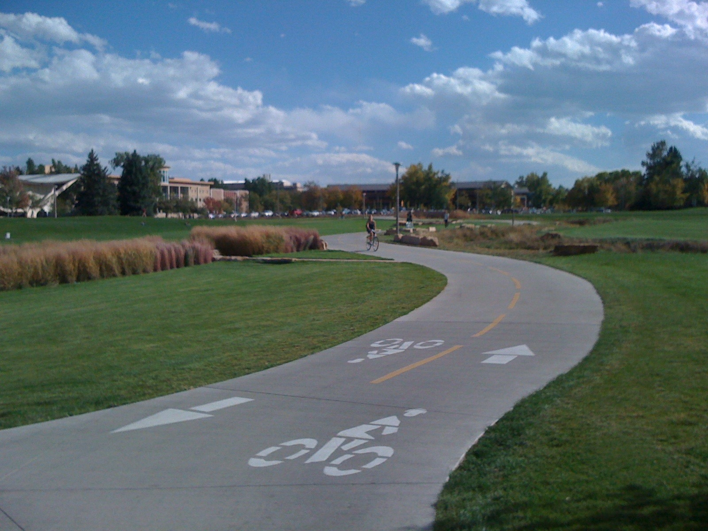
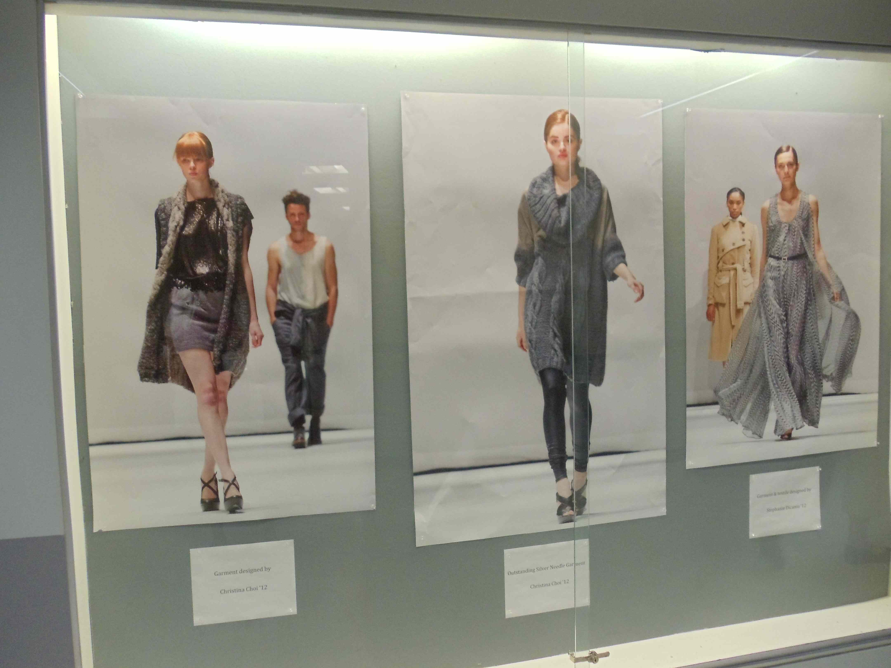

© Laurie Kiguchi
Colorado State University
Juniors and seniors!
It's time to get serious about planning and preparing for college!
Are you building a strong academic record?
... taking the appropriate classes for your abilities and interests?
... preparing for majors with specific requirements (e.g., engineering, nursing, visual and performing arts, etc.)?
... challenging yourself?
... acting on your curiosity?
... taking the appropriate college admissions tests, at the appropriate time?
Are you living life and learning about yourself?
... exploring and building on your interests, both in and out of the classroom?
... researching possible college majors and careers?
... preparing to play sports in college?
Are you exploring colleges and universities?
... thinking about what you'd like for your college experience?
... visiting colleges and asking the right questions?
... building a balanced college list - for admissions and for application prep?
Are you preparing to apply and making a plan?

© Laurie Kiguchi
Marist College
From junior year through senior spring
The focus both broadens and deepens in junior year, which is a key year for building the student's academic record as well as college admissions testing.
Exploring possible majors or careers, developing college preferences and constraints (both student and parent), building the college list, exploring colleges, and preparing for college applications (essays!) are goals for junior year and the following summer. While some of this may continue into senior year, students typically appreciate the reduced stress that comes with having so much accomplished prior to the start of school.
Timely meetings during junior year can be really helpful to encourage students to stay on track, take advantage of available time (e.g., winter and spring break to visit colleges), and make progress. Thoughtful and effective time management is key to balancing academics and extracurriculars while also preparing for college.
Laurie can help with planning for admissions testing, college visits, and other college exploration within the context of student lives.
Fall of senior year brings application deadlines and innumerable details of application preparation.
While some college deadlines extend through the spring, early application deadlines start in late October, and deadlines for California State Universities and the University of California systems are the end of November. Regular admission deadlines for other institutions range from late fall through the spring, depending on the school.
Everything will be ok!
Laurie guides students through the process, helping them to learn what's needed, do what's needed, and follow through with what's needed to apply. Whether a student applies only to California State Universities or to an array of private and public institutions with many required essays, letters of recommendation, coach outreach, supplemental talent submissions, and merit scholarship opportunities, Laurie can help.
Time flies! Plan ahead and plan your time. Everything will be ok!
© Laurie Kiguchi
California State University Fullerton
Never interrupt someone doing what you said couldn't be done. — Amelia Earhart